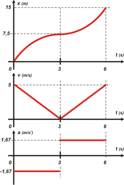

|  |
|
Los valores de las aceleraciones (constantes) son sencillas: las velocidades varían en 5 m/s (de 5 a 0 en 3 segundos; en la segunda parte lo mismo.
Y para conocer los desplazamientos calculé las áreas encerradas bajo las curvas en ambas mitades. Son triángulos así que lo calculé mentalmente (3x5)/2. Eso me dió 7,5 m en el primer tramo y otro tanto en el segundo. Híper fácil.
Por ahí no te resulta tan sencillo hacer bien el gráfico de posición (estilísticamente, me refiero). Para empezar no debe caberte duda de que se trata de dos arcos de parábola El primer arco debe arrancar con cierta inclinación y termina horizontal. El segundo arco debe arrancar horizontal y terminar con la misma inclinación con la que arrancó el primer arco. ¿Te cerró? |